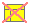
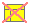
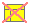

 


|  |
| SVG Development Notes KN |
| Page 1 | En Per Illustration | Page 13 | Page 7 - Arrays | |
| Page 2 | A while flow graph | Page 14 | ASCII Tabel | |
| Page 3 | Animation testing | Page 15 | Composite Nodes | |
| Page 4 | Animation testing - Keyboard Events | Page 16 | Class Illustrations | |
| Page 5 | More Animation Testing | Page 17 | Cons Cells | |
| Page 6 | Page 1 | Page 18 | Animated Cons Cells | |
| Page 7 | Location test page | Page 19 | List Insertion | |
| Page 8 | Page 3 | Page 20 | List deletion | |
| Page 9 | Page 4 | Page 21 | Tree Page | |
| Page 10 | Page 5 | Page 22 | Tree Page - traversal | |
| Page 11 | Page 5 - Animated | Page 23 | Tree Page - Subset selection | |
| Page 12 | Page 6 | Page 24 | Tree Page - traversal with edge motion |
| Generated: Monday November 14, 2011, 09:24:26 |